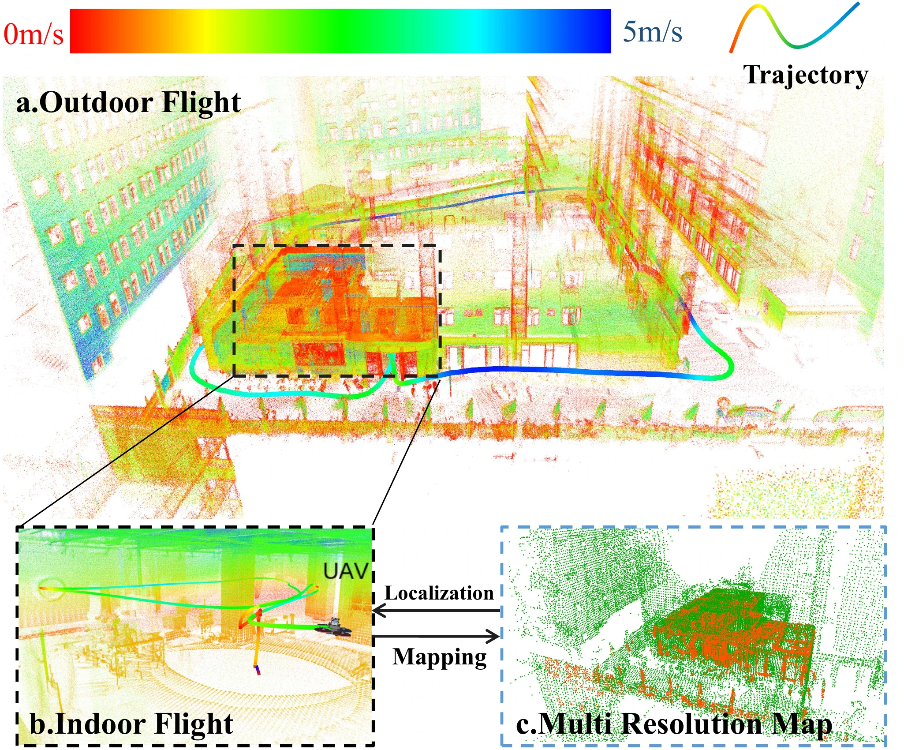
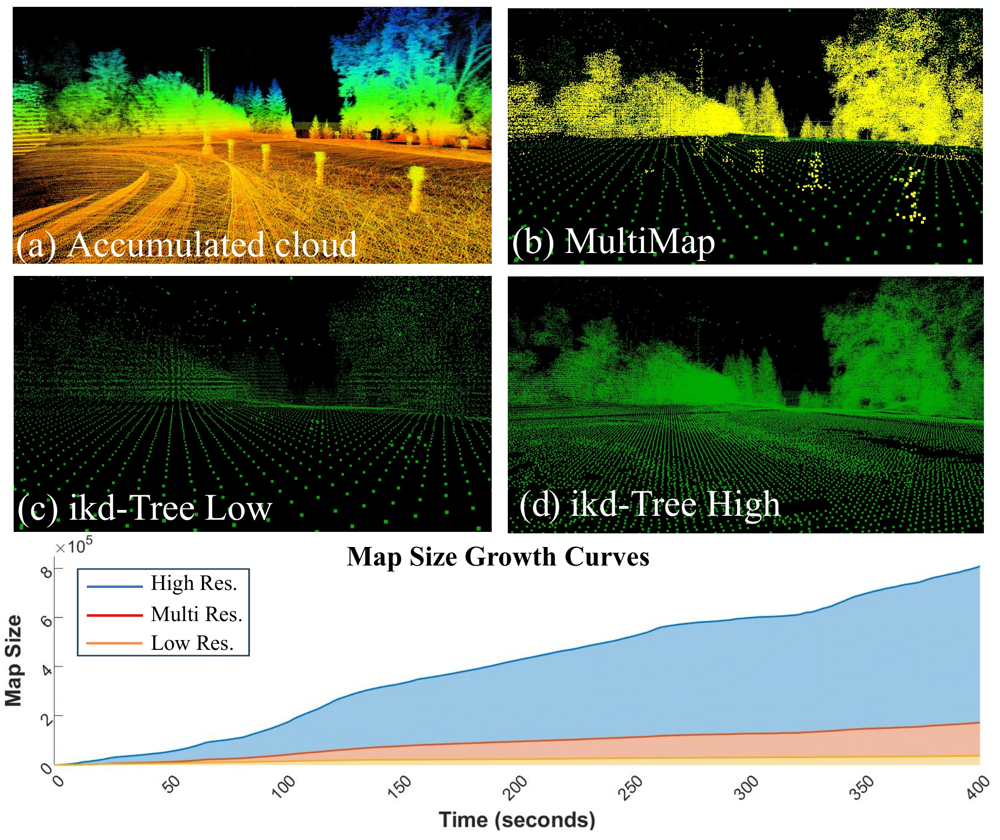
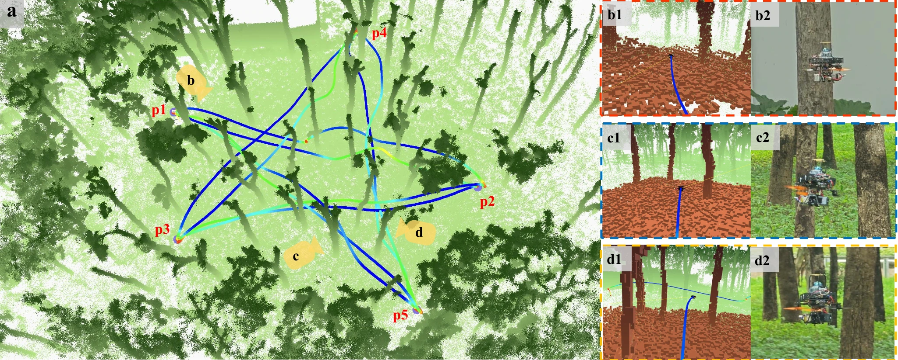

Choose enough points
Process undistorted scan points in batches. Stop registration once the accumulated measurements constrain the pose sufficiently.
Accepted paper IEEE/ASME T-Mech
1 The University of Hong Kong
2 Harbin Institute of Technology, Shenzhen
* Equal contribution · † Corresponding author
This paper presents DALIO, a novel LiDAR-inertial odometry (LIO) framework that achieves robust localization across diverse environments while significantly reducing computational complexity. Embodying a “Computation on Demand” philosophy, DALIO introduces a degeneracy-aware batch selection module that dynamically adjusts the number of points used for scan registration based on real-time assessments of environmental constraints. Additionally, DALIO incorporates a degeneracy suppression method that filters out the influence of measurements along poorly constrained directions, thereby preventing noise in degenerate modes from corrupting the state update and improving overall estimation stability. Furthermore, DALIO employs MultiMap, an adaptive multi-resolution mapping strategy that preserves essential raw point data while selectively refining map resolution, effectively reducing memory usage and enabling accurate localization in both large-scale and small-scale settings. Extensive evaluations on public datasets, multiple UAV platforms, and resource-constrained embedded systems show that DALIO maintains competitive localization accuracy while reducing runtime by up to 68% compared with FAST-LIO2 and preserving real-time performance across diverse hardware platforms.
Method
How many points does a pose update really need? DALIO answers from the geometry of the current scan. Registration can stop early, while the map still receives observations from the whole scan.

Process undistorted scan points in batches. Stop registration once the accumulated measurements constrain the pose sufficiently.
If all batches have been used and degeneracy persists, suppress LiDAR corrections along poorly observed directions.
Keep a representative observed point where a coarse voxel is sufficient. Subdivide non-planar regions to retain finer geometry.
Field experiment

On a 181 m flight reaching 5 m/s, the UAV leaves the building, completes an outdoor loop and returns indoors. The map preserves fine indoor structure without storing the entire outdoor scene at the finest scale.
Paper figure The trajectory is coloured by speed. In the MultiMap inset, green denotes lower resolution and red denotes higher resolution.
Interactive maps
Benchmark results
Ground-truth trajectories are evaluated by root-mean-square error (RMSE). For sequences that return to their starting point, the paper reports end-to-end error (E2E). Both are in metres; lower is better.
| Sequence | DALIO | DALIO† | DALIO* | FAST-LIO2 | FASTER-LIO | VoxelMap | DLIO | DALI-SLAM |
|---|---|---|---|---|---|---|---|---|
| nclt1 | 1.34 | 1.35 | 1.31 | 1.21 | 1.24 | 1.28 | 1.26 | 1.48 |
| nclt2 | 1.56 | 1.55 | 1.61 | 2.03 | 1.59 | 1.44 | 1.62 | 2.14 |
| nclt3 | 0.98 | 1.00 | 0.92 | 0.88 | 1.03 | 0.99 | 1.05 | 0.94 |
| ncd1 | 0.33 | 0.34 | 0.32 | 0.35 | 0.32 | 0.31 | 0.33 | 0.37 |
| ncd2 | 0.32 | 0.31 | 0.35 | 0.35 | 0.38 | 0.33 | 0.30 | 0.36 |
| ncd3 | 0.12 | 0.12 | 0.12 | 0.11 | 0.14 | 0.13 | 0.13 | 0.12 |
| m3o1 | 0.20 | 0.21 | 0.21 | 0.23 | 0.25 | 0.24 | 0.26 | 0.22 |
| m3o2 | 0.19 | 0.20 | 0.19 | 0.30 | 0.20 | 0.94 | 0.21 | 0.28 |
| Sequence | DALIO | DALIO† | DALIO* | FAST-LIO2 | FASTER-LIO | VoxelMap | DLIO | DALI-SLAM |
|---|---|---|---|---|---|---|---|---|
| hku1 | 0.04 | 0.04 | 0.04 | 0.03 | 0.11 | 0.04 | 0.12 | 0.05 |
| hku2 | 0.04 | 0.06 | 0.03 | 0.04 | 0.04 | 0.04 | 0.05 | 0.09 |
| hku3 | 0.03 | 0.03 | 0.04 | 1.96 | 2.05 | 0.10 | 2.12 | 1.88 |
| ust1 | 0.65 | 0.91 | 0.93 | 3.38 | 3.87 | 4.91 | 3.96 | 3.52 |
| ust2 | 1.32 | 1.17 | 0.97 | 2.93 | 2.77 | 3.44 | 2.84 | 3.10 |
| ust3 | 0.04 | 0.05 | 0.02 | 0.03 | 0.04 | 0.04 | 0.05 | 0.04 |
| m3i1 | 0.04 | 0.56 | 0.54 | 1.03 | 0.98 | 3.75 | 1.04 | 1.08 |
| m3i2 | 0.45 | 1.86 | 0.45 | 3.43 | 5.53 | – | 0.68 | 1.36 |
| m3i3 | 0.05 | 0.06 | 0.04 | 0.03 | 0.04 | 0.04 | 0.05 | 0.04 |
| dege1 | 1.01 | 1.58 | 7.35 | 3.13 | 2.28 | 12.85 | 7.41 | 7.02 |
| dege2 | 1.32 | 8.12 | 5.86 | 6.45 | 15.82 | – | 5.90 | 6.58 |
| self1 | 0.06 | 0.09 | 0.08 | 0.11 | 0.07 | 0.09 | 0.08 | 0.12 |
| self2 | 0.04 | 2.62 | 0.16 | 9.51 | – | – | – | 9.51 |
| self3 | 0.02 | 0.60 | 0.05 | 1.09 | 0.29 | 0.01 | 0.11 | 1.03 |
| self4 | 0.03 | 0.17 | 0.02 | 0.27 | 0.44 | 4.35 | 0.06 | 0.56 |
Bold marks the lowest error for each sequence, including ties. A dash (–) means no result is reported.
DALIO† disables degeneracy suppression; DALIO* uses all points for registration. DALI-SLAM is evaluated using its front-end odometry module.
Reported experiments

Average loop-return error (m) / frame runtime (ms). Lower values are better for both metrics.
| Map backend | HKU | UST | Self |
|---|---|---|---|
| MultiMap | 0.04 / 12.50 | 0.64 / 14.63 | 0.08 / 18.10 |
| ikd-Tree High | 0.44 / 16.22 | 2.21 / 19.17 | 0.64 / 22.17 |
| ikd-Tree Low | 0.70 / 12.56 | 2.12 / 16.46 | 2.75 / 20.56 |
Fixed-resolution baselines: High, 0.125 m; Low, 0.5 m. Full dataset metrics and platform details are in the paper.
Separate field experiment
In a separate high-speed trial, the aircraft completed two loops between five waypoints and reached 8 m/s.
